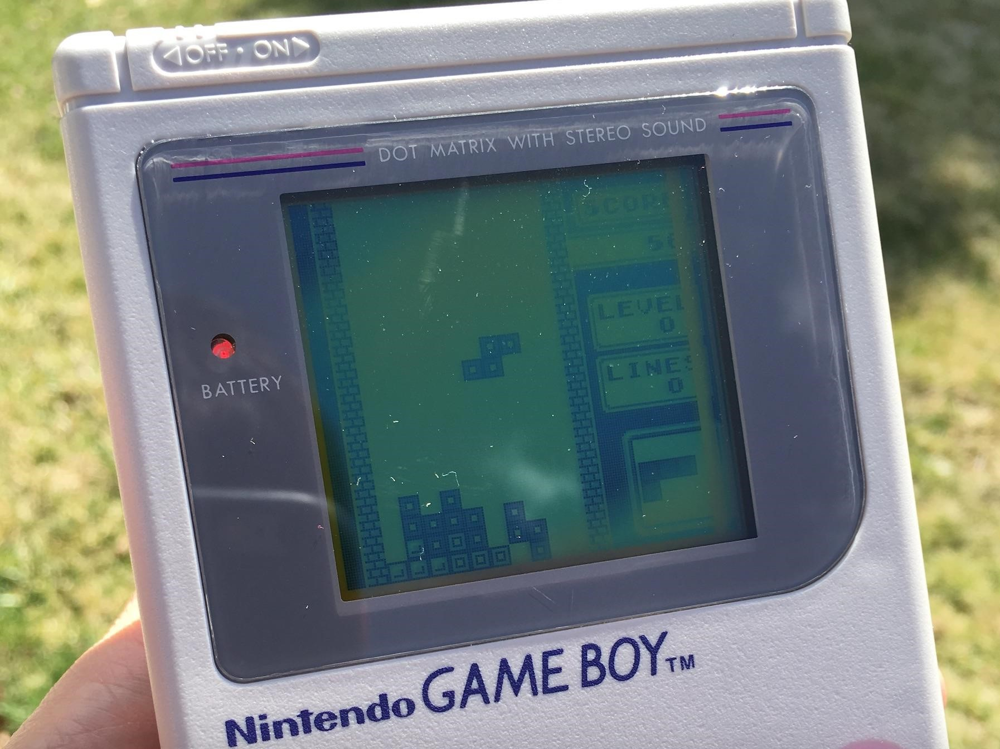
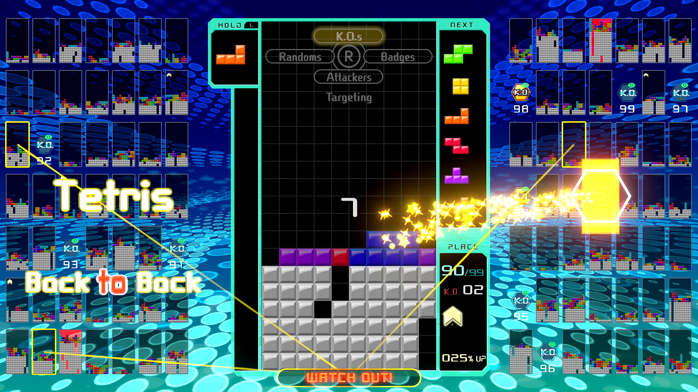

How to play Tetris, in a hard way
Speaking of tetris, it may reminds you of those good old days when you sit in the yard with your cousing, playing the gameboy for the whole afternoon. You may think that Tetris is an outdated game and there is absolutely no meaing to learn how to play it well today. You cannot be more wrong about this.
The tetris game can be modern again.
For example, there are countless "modern version" of tetris, which has slightly different rules. Among them, the most famous is "Tetris 99"
Tetris 99 is a multiplayer puzzle game in which 99 players play against each other at the same time, with the aim to be the last player remaining. As with the traditional Tetris formula, players rotate and drop shaped bricks known as tetrominoes onto a board. Players can clear tetrominoes by completing rows across both sides, whereas players will lose if tetrominoes overflow off the top of the board. As with normal Tetris rules, players have the option to store a tetromino piece to swap out at any time. By clearing multiple lines or performing continuous line clears in a row, players can send "garbage" to other players, which will appear on their board unless they can quickly clear lines in response. More garbage can be sent by completing combination moves in succession of making a "tetris" (matching 4 lines at once) or performing a "T-spin" (squeezing the T-shaped tetromino into a position it would otherwise not fall into by rapidly rotating it).[1]
During gameplay, small grids representing the other 98 players are displayed at the sides of the main board. Players can either choose to target individual players, or have the computer automatically target other players based on one of four criteria: random players, those who are targeting the player, those who are close to being defeated, and those who possess badges. Badges are earned by knocking out a player with garbage (or gray lines), which earns them a piece of a badge, along with any other badges or pieces that player had. The more badges a player completes and possesses, the more lines they can send to other players at a time (up to a 100% boost). At the end of a game, players will earn experience that will increase their level. The game periodically features special events;[2] one of its first such events was held in March 2019 where players with the top number of wins over a weekend play period would win rewards within the My Nintendo loyalty program.[3]
In May 2019, Nintendo released paid downloadable content (DLC) for the game, named the Big Block DLC. The DLC adds 2 offline modes: CPU Battle, where players battle 98 bot players; and Marathon, where players play an endless game of Tetris, and challenged to achieve the highest score. Nintendo plans to release more modes in the future.[4] Additionally modes will include a local offline mode, allowing multiple players to compete locally.[5]